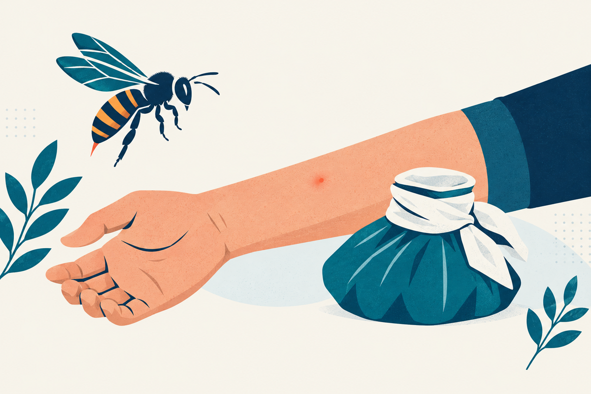

Bee and Wasp Sting Treatment: The First 48 Hours
A physician's evidence-based guide to local swelling, first aid, and the symptoms that need emergency care.

How do you treat a bee or wasp sting in the first 48 hours?
Key Takeaways
- Location matters more than the size of a red patch. Contiguous swelling is different from hives elsewhere, breathing symptoms, or fainting.[1][2][4]
- A large local reaction may get bigger during the first two days. That time course is not, by itself, a reason to start antibiotics.[1][2][9]
- Cold compresses and appropriate symptom medicines can help comfort. Evidence that any one remedy quickly ends a large reaction is limited.[1][3][7][9]
- Epinephrine is first-line for anaphylaxis. Antihistamines and steroid creams cannot replace it.[1][2][4]
- A new systemic sting reaction needs appropriate emergency assessment and later allergy evaluation. Venom testing and immunotherapy belong with a specialist.[1][2][4]
How do you treat a bee or wasp sting?
Wasp sting treatment: what should you do first?
First decide whether the symptoms are only at the sting site. If breathing becomes difficult, the throat feels tight, the tongue swells, you feel faint, or symptoms are spreading through the body, stop reading the home-care instructions and take emergency action. Use your prescribed epinephrine according to your emergency plan and call 911. A person with a severe reaction should not drive to care or wait for an online appointment.[1][2][4]
For a localized sting, move away from the insects to prevent more stings. Check whether a stinger remains, remove it promptly if visible, and wash with soap and water. Apply a cold pack wrapped in cloth or a cool clean compress, and raise the affected arm or leg if comfortable. These measures are intended to reduce discomfort and swelling, not to neutralize venom or prevent anaphylaxis.[1][3][8][10]
Remove tight rings or other constricting items from the affected area before swelling increases. Avoid scratching, squeezing, cutting, or repeatedly probing the puncture. Scratching can make the skin more irritated and increase the risk of infection. A visible puncture does not need to be enlarged to let venom out.[3][7][8]
Bee sting treatment: what changes if a stinger is left behind?
Honeybees commonly leave a barbed stinger and attached venom apparatus in the skin; wasps usually do not. If you see a retained stinger, the immediate practical task is to remove it, not identify the insect perfectly. A fingernail or a readily available firm edge can scrape it sideways. Do not delay emergency treatment for a careful skin inspection if systemic symptoms are already present.[1][5][6][8]
The rest of first aid is similar for bees and wasps. An oral antihistamine may help itch and an appropriate pain reliever may help soreness, but the choice should account for your health conditions and other medicines. A pharmacist can help check the product. A large reaction, a sensitive sting location, or worsening symptoms can change the plan from home care to in-person assessment.[1][3][7][9][10]
Why does bee sting swelling get worse after 48 hours?
A large local reaction is an inflammatory response that remains connected to the sting site. The US practice parameter describes swelling that progresses over the first 24 to 48 hours; another passage describes a peak at 48 to 72 hours. It can involve much of a hand, foot, or limb without automatically being anaphylaxis. That is a typical range, not a guarantee that swelling on day two is harmless.[1][2][3]
The reaction can be itchy, warm, red or discolored, tight, and uncomfortable. Swelling that spreads directly from a puncture on the hand toward the wrist is not the same pattern as separate hives on the chest or face. On darker skin, redness may be less obvious, so changes in warmth, tenderness, swelling, and skin texture matter too. Distribution and associated symptoms are more informative than a photograph of color alone.[1][3][7][10]
Ask what is changing besides the size. A swollen area with mostly itch and a known sting history may fit local inflammation. Fever, chills, drainage, increasingly severe pain, rapidly worsening illness, or loss of function needs reassessment. Neither a bright red patch nor a line extending along the skin can establish infection on its own: noninfectious inflammation can sometimes look similar.[1][2][3][9]
Large local reaction: what does “large” mean?
Clinical reviews commonly describe a large local reaction as swelling larger than about 10 cm that persists beyond the first day. This is a descriptive category, not a home diagnostic test. A smaller sting in the mouth or near the eye can be more urgent than a much larger patch on the calf. Do not wait to reach a size cutoff before seeking help for a risky location or systemic symptoms.[1][3][4][9]
How long does a wasp sting last?
A small local reaction often begins with sharp pain and a raised, tender spot, then improves. Larger reactions can take several days to settle. The US practice parameter describes large local swelling subsiding over roughly 3 to 10 days and notes that some reactions last a week or more. Pain, itching, and visible swelling do not necessarily disappear at the same time.[1][2][3]
The useful question is whether the overall course fits a recovering local reaction. A patch that remains visible but is less sore and no longer expanding is different from new severe pain, fever, drainage, or rapidly spreading swelling. Time alone cannot distinguish allergy from infection. If symptoms are worsening significantly or you feel unwell, arrange assessment rather than waiting for a particular day on a timeline.[1][2][9][10]
NICE advises that skin redness and itching after bites or stings can last up to 10 days. That is UK guidance for a broader set of bites and stings, not a promise that every US bee sting should be observed at home for that long. Persistent or unusual lesions, symptoms that fail to improve, and uncertainty about whether a sting occurred deserve review.[9][10]
Take a clear photograph and note when the sting occurred, when swelling began, and whether the area is still changing. This can help a clinician interpret the trajectory, especially if a video visit is being considered for a stable problem. Do not let tracking photographs delay care for breathing trouble, a change in voice, faintness, vomiting with other allergic symptoms, or rapid deterioration.[1][4][9]
Bee sting allergic reaction: local swelling or anaphylaxis?
“Allergic reaction” is used loosely in everyday speech. Clinically, a large local reaction and anaphylaxis are different problems. A large local reaction remains around and contiguous with the sting. A systemic reaction produces symptoms away from it, such as generalized hives, swelling at other sites, breathing symptoms, faintness, or gastrointestinal symptoms. A systemic reaction can progress and requires prompt assessment.[1][2][4]
Skin-only systemic reaction: not the same as a local patch
Hives on the trunk after a sting to the ankle are a systemic skin reaction even if the person is breathing normally. That does not mean every skin-only reaction already meets anaphylaxis criteria, but it should not be dismissed as a big local reaction. Seek urgent medical guidance, follow an existing allergy action plan, and escalate immediately if airway, breathing, circulation, or other concerning symptoms develop.[1][2][4]
Anaphylaxis: do not wait for a rash
Anaphylaxis can involve difficulty breathing, wheezing, throat or voice changes, collapse, or reduced circulation. Severe crampy abdominal pain or repetitive vomiting after a sting can also be part of a systemic allergic reaction, particularly with skin or other organ symptoms. Typical skin signs may be absent. Waiting for hives before taking breathing or fainting symptoms seriously is unsafe.[1][2][4]
Use your prescribed epinephrine promptly when your action plan indicates anaphylaxis, and call 911. Tell the dispatcher that anaphylaxis is suspected and explain what medicine was given. If you do not have epinephrine, call 911 immediately. Do not substitute a borrowed oral medicine, a shower, a steroid cream, or a plan to watch the reaction overnight for emergency care.[1][2][4]
A previous mild sting does not establish that the next sting will also be mild. Similarly, a prior large local reaction does not mean that you definitely need allergy shots. The acute response is based on current symptoms, while long-term risk assessment considers the prior reaction, exposure pattern, medical history, and appropriate specialist testing.[1][2][3]
When should you worry about a bee or wasp sting?
The first decision is the care setting, not which cream to buy. Trouble breathing, throat or tongue swelling, a new hoarse voice, collapse, or marked faintness after a sting is an emergency. Generalized hives with breathing, circulation, or severe gastrointestinal symptoms also calls for emergency action. A rapidly evolving reaction should not be managed through asynchronous messages.[1][2][4]
Swipe horizontally on a small screen to read every column.
| Pattern | Next step | Why it matters |
|---|---|---|
| Localized pain or itch, stable adult, no red flags | First aid and appropriate symptom care; seek advice if uncertain | Most isolated local reactions do not require emergency medicines or antibiotics. |
| Large swelling affecting function, uncertain diagnosis, eye-area sting, possible infection, or symptoms not improving | Prompt in-person clinical assessment | The site, progression, examination and medical history may change treatment. |
| Breathing difficulty, throat or tongue swelling, faintness, collapse, or rapidly developing systemic symptoms | Use prescribed epinephrine as directed and call 911 | Possible anaphylaxis needs immediate emergency treatment, even without hives. |
The categories are a decision aid, not a way to rule out serious illness from a photograph. If the description is incomplete or symptoms are changing rapidly, choose the more urgent assessment. The clinical guidance supports hospital referral for systemic allergic reactions and a lower threshold for specialist advice with mouth, throat, eye-area stings, systemic illness, or severe immune suppression.[1][4][9]
Mouth, throat, eye, and multiple-sting exposures
A sting inside the mouth or throat is not ordinary home-care territory because swelling can threaten the airway. A sting near the eye needs prompt assessment; an apparent stinger in the eye should not be dug out at home. Numerous stings can cause toxic effects as well as allergy, so a swarm exposure or illness after multiple stings warrants urgent medical evaluation even without a known allergy.[1][2][3][9]
People with a previous severe sting reaction should follow their established emergency plan and seek help early if symptoms occur. A refill appointment is not a replacement for evaluation after a new reaction. People with immune suppression who develop suspected infection also need a more careful in-person plan rather than a reflex prescription based on appearance.[1][4][9][11]
Bee sting vs. wasp sting: does the insect change treatment?
Bees, wasps, hornets, and yellow jackets are stinging insects, but their behavior and the presence of a retained stinger can differ. Honeybees commonly leave their stinger and attached venom apparatus behind. Wasps and hornets usually retain theirs and may sting again. These distinctions help with first aid, but the current symptoms determine whether the situation is local, systemic, or an emergency.[1][2][3][7]
Swipe horizontally on a small screen to read every column.
| Question | Honeybee | Wasp, hornet, or yellow jacket |
|---|---|---|
| Is a stinger commonly retained? | Yes; remove it promptly if visible | Usually no; do not repeatedly dig for something that is not visible. |
| Can the insect sting repeatedly? | A retained stinger is common after a honeybee sting | Repeated stings are possible. |
| Can it cause a large local reaction or anaphylaxis? | Yes | Yes |
| Does the insect dictate an acid or alkali home remedy? | No verified neutralization treatment is recommended here | No; use first aid and symptom-based triage. |
A retained stinger is a clue, not a perfect insect identification test. People often did not see the insect closely, and a hurried identification may be wrong. You do not need to catch the insect, touch a nest, or risk another sting to make a safe first-aid decision. If a photograph already exists, it may be helpful later, but do not delay care to obtain it.[1][2][7][8]
This guide is specifically about bee and wasp-type stings. Tick bites, mosquito bites, fire-ant stings, spider bites, and marine stings have different considerations and should not be treated as interchangeable venom exposures. For a suspected tick bite, see the tick-bite treatment guide; do not use bee-stinger advice to remove an attached tick.[8][9][10]
For someone with a previous systemic reaction, the identity of the insect becomes more relevant during allergy assessment. Testing and decisions about venom immunotherapy should be linked to the clinical history rather than a positive allergy test alone. Routine testing after a simple local reaction can create confusing results without changing the immediate treatment.[1][2][3]
How do you remove a bee stinger?
Look for a visible stinger at the puncture after moving to safety. A quick sideways scrape with a fingernail or an immediately available firm edge is a reasonable first step. Wash the skin afterward. If nothing is visible, do not repeatedly cut, squeeze, or scrape the area trying to find a hidden stinger. Persistent focal pain or a suspected retained foreign body can be examined by a clinician.[5][6][8][10]
CDC and NHS first-aid instructions favor scraping and advise against squeezing the venom apparatus with tweezers. A small 1996 experiment, however, found that wheal size increased with delayed removal and did not differ between scraping and pinching when removal happened promptly. A 2020 systematic review found only two eligible studies and concluded that quick removal matters more than insisting on one technique.[5][6][8][10]
The practical message is not to leave a visible stinger in place while searching for a credit card. Use a prompt, simple method that you can carry out safely. The evidence is small and concerns venom delivery or local wheal size, not proof that a particular method prevents anaphylaxis, infection, or all swelling. We do not treat the review and its underlying trial as independent replications.[5][6]
If you already pulled the stinger out, there is no reason to panic that you necessarily made the reaction dangerous. Focus on current symptoms, wash the area, and continue appropriate first aid. Any systemic symptoms still require the same emergency response regardless of the removal method. Do not attempt to remove a stinger from the eye or deep inside the mouth yourself.[4][5][6][9]
Stinger removal is a small part of care. It cannot reverse an allergic reaction already underway and is not a substitute for epinephrine. Likewise, failing to see a stinger does not make a wasp sting safe: anaphylaxis can follow a sting that leaves no retained apparatus at all.[1][2][4]
Which bee sting home remedies help, and which should you avoid?
Cold compresses, washing, and elevation
Basic care is intentionally simple. Wash with soap and water, use a cloth-wrapped cold pack or clean cool compress, and raise the area when practical. The NHS advises a cold application for about 20 minutes for swelling. Protect the skin from direct ice contact and stop if the cold is painful. This is comfort care; it does not extract venom from deep tissue.[1][3][8][10]
Itch and pain relief
An oral antihistamine can be considered for troublesome itch, and a suitable over-the-counter analgesic can help pain. A topical hydrocortisone product is another commonly used option for local itching and swelling. Follow the exact product label and pharmacist advice rather than combining several creams or borrowing a strong prescription steroid. These treatments have different purposes and are not interchangeable with an epinephrine auto-injector.[1][3][7][9][10]
There is an evidence limit here. NICE notes uncertainty about oral antihistamine effectiveness for bites and stings, and the US practice parameter grades local symptomatic measures largely on low-level evidence and clinical experience. Symptom care is reasonable, but it should not be advertised as a proven way to shorten every large local reaction or prevent future severe allergy.[1][9]
Baking soda, vinegar, suction, and other “venom removal” claims
Do not rely on baking-soda paste, vinegar, toothpaste, meat tenderizer, or a suction gadget as an emergency or definitive sting treatment. The NHS specifically advises against home remedies such as bicarbonate of soda. This guide does not endorse the internet rule that bees need an alkali and wasps need an acid: the verified care recommendations focus on removal of a retained stinger, cleaning, cold, symptom treatment, and triage.[1][8][10]
Avoid scratching and repeated manipulation. If a remedy burns, causes a new rash, or worsens irritation, stop using it and seek appropriate advice. A home mixture can complicate the skin appearance without addressing whether the original reaction is local or systemic. A reaction that is getting worse despite home care deserves reassessment rather than another unverified product.[9][10]
Medicine precautions and when a prescription needs assessment
A medicine that is sold without a prescription can still be the wrong choice for a particular adult. Before choosing a pain reliever or antihistamine, tell the pharmacist about pregnancy, kidney or liver disease, prior medication reactions, other prescribed medicines, and anything already taken for this sting. This guide gives no universal dose because the product and individual safety review matter.[1][7][9][10]
Some antihistamines can make you sleepy. Read warnings about driving, alcohol, and other sedating medicines, and do not assume that more sedation means better treatment of the sting. If you are suddenly faint, confused, or unusually drowsy during a developing reaction, do not simply attribute it to an antihistamine and go to sleep. Circulation or breathing problems need emergency assessment.[4][9][10]
A topical cream is for the skin, not the eye or inside the mouth. If the sting is at a sensitive site, if the skin is broken or appears infected, or if a large area is involved, ask a clinician or pharmacist before treating it with a steroid cream. Applying a medicine around a dangerous sting location must not delay the indicated examination.[3][9][10]
Oral corticosteroids are sometimes considered by a clinician for a severe large local reaction, especially when swelling substantially affects function. The US practice parameter explicitly says definitive controlled-study proof of benefit is lacking. They are not a routine requirement for every swollen sting and should not be presented as insurance against anaphylaxis or a reason to stay home with emergency symptoms.[1][2][4]
Do not use leftover antibiotics, an old prednisone pack, or someone else’s auto-injector plan as a self-directed treatment course. If you already have an epinephrine prescription, know the instructions for your particular device and follow the written emergency action plan. Different devices have different use instructions; technique should be reviewed before an emergency, not improvised from a general article.[1][4][9][11]
Do bee or wasp stings need antibiotics?
Usually not. Rapid redness, warmth, itching, and swelling after a sting are commonly inflammatory or allergic rather than bacterial infection. NICE recommends no antibiotic when there are no signs or symptoms of infection, and the US sting practice parameter similarly cautions against treating large local swelling as infection. Antibiotics do not treat venom-induced inflammation or anaphylaxis.[1][2][9]
Swipe horizontally on a small screen to read every column.
| Feature | Can fit a local reaction | Needs clinical reassessment |
|---|---|---|
| Timing and trajectory | Swelling begins after the sting and increases during the early inflammatory period | Rapid significant worsening, especially with new illness or severe pain. |
| Skin and discomfort | Itch, warmth and contiguous swelling can occur without bacteria | Drainage, worsening tenderness, concerning skin damage, or uncertainty about the diagnosis. |
| Whole-body symptoms | Feeling otherwise well supports, but does not prove, an uncomplicated local pattern | Fever, chills, systemic illness, breathing symptoms or faintness. |
| Antibiotics | Not used just because a patch is red or large | Considered only if the clinician finds evidence of bacterial infection. |
No single feature perfectly separates the two. Warmth and redness occur in both. Even a line of redness can be caused by noninfectious inflammation after a sting, so it should be assessed in context rather than automatically called cellulitis. Conversely, the absence of fever does not prove that a worsening wound is uninfected. A clinician evaluates the whole pattern.[1][2][3][9]
If infection is suspected, the clinician chooses treatment based on examination, severity, allergies, and other patient factors. UK NICE antibiotic choices are not copied into this US guide as a universal regimen. A sting is not an indication to take whatever antibiotic remains in a cabinet. For the separate skin-infection problem, see the cellulitis guide.[1][9]
Severe pain out of proportion to what the skin looks like, rapidly worsening illness, or significant infection in a severely immunocompromised person needs urgent in-person evaluation. These findings should not be routed through a routine same-day prescription pathway. The risk decision comes before the question of which antibiotic might be used.[9]
What should you do if a sting causes anaphylaxis?
Use your prescribed epinephrine immediately according to your device instructions and written action plan, and call 911. Epinephrine injected into the outer thigh is the first-line treatment described in anaphylaxis guidance. Do not wait to see whether an antihistamine, inhaler, steroid tablet, or cold compress works. Those measures do not replace epinephrine for a severe systemic reaction.[1][2][4]
Tell the emergency dispatcher about breathing difficulty, throat or tongue swelling, faintness, the time of the sting, and any epinephrine given. If someone is with you, ask them to remain nearby and assist. Do not drive yourself. Even if symptoms improve after epinephrine, emergency assessment remains necessary because symptoms can persist or return and further treatment may be needed.[1][2][4][11]
Do not stand up suddenly or walk around while faint or unwell. WAO guidance generally favors lying flat, with positioning adjusted for breathing difficulty, pregnancy, vomiting, or unconsciousness. Follow dispatcher instructions. A person who is unresponsive or not breathing normally needs dispatcher-guided resuscitation, not an oral medicine or something to drink.[2][4]
If symptoms persist or recur before help arrives, follow the action plan and dispatcher instructions about another epinephrine dose. This page does not replace the instructions for your own prescribed device. Emergency professionals determine additional treatment and the observation period; there is no single safe home waiting interval that applies to every reaction.[1][2][4]
After recovery, arrange an allergy evaluation to clarify the trigger, review epinephrine technique and the written plan, and consider whether venom immunotherapy is appropriate. A severe reaction is not finished medically just because the skin looks normal again. New-anaphylaxis investigation and a stable refill of an existing prescription are different kinds of care.[1][2][4][11]
What does the evidence say about sting treatment?
The US stinging-insect practice parameter is titled the 2016 update and was published in a 2017 journal issue. It is not a new 2026 guideline. It supports symptom treatment for large local reactions, appropriate epinephrine education and referral after systemic reactions, and selective use of venom testing and immunotherapy. A 2014 NEJM clinical review and a 2012 clinical review corroborate the main distinction between local and systemic reactions.[1][2][3]
The strongest practical consensus is about recognizing anaphylaxis and prioritizing epinephrine, not about which cream makes a hand stop swelling fastest. WAO guidance explains the limited role of antihistamines in anaphylaxis and the uncertainty surrounding routine corticosteroids. Local symptom recommendations often reflect clinical experience and limited direct studies rather than large, modern comparative trials.[1][2][4][9]
The stinger-removal literature illustrates why recommendations need context. CDC and NHS favor scraping; the experimental study and later systematic review emphasize speed, with little evidence that prompt pinching is worse. The systematic review contains the earlier experiment, so citing both does not create two independent trials. We present the difference openly rather than converting one technique into a false safety rule.[5][6][8][10]
The clinical review from Germany discusses local steroid treatment and a specific prednisolone regimen. That is not reproduced here as an automatic US prescription. An individual clinician decides whether an adult’s functional impairment, comorbidities, and examination justify a short systemic course. The absence of a dose table is deliberate: a swelling guide should not become an unsupervised steroid protocol.[1][3]
The 2016 nursing review was read in full through EBSCOhost and supports general symptom care and referral. Its older emergency dosing and long-term contraindication discussions are not adopted as current US rules. Recent diagnostic papers do not, by themselves, establish a new treatment for uncomplicated local swelling.[7]
How do you prevent another sting, and who needs an allergist?
Avoid disturbing nests and keep food and sweet drinks covered outdoors. Wear shoes and clothing appropriate to the setting, and take care around places where insects gather. CDC advises staying calm around a single flying stinging insect rather than swatting. If several insects attack, move quickly to shelter; do not stay near the nest trying to identify them or jump into water to escape.[1][2][8]
If a nest needs removal, avoid handling it yourself when doing so risks more stings. A history of a severe reaction makes preparedness especially relevant: review your emergency plan, check that prescribed epinephrine is available and in date, and make sure the people around you know what to do. Preparation does not mean trying to manage a severe reaction alone.[1][2][4][8]
Local reactions alone: testing and allergy shots are usually not routine
Most adults whose reactions have only been large and local do not need routine venom allergy testing or venom immunotherapy. An allergy test can be positive in someone who has no clinically significant systemic sting allergy, so testing is interpreted together with the actual reaction history. Recurrent unavoidable exposure and major quality-of-life effects can justify an individualized specialist discussion.[1][2][3]
Systemic reactions: assessment after emergency care
After a systemic reaction, an allergist can assess the history, determine which testing is appropriate, and discuss future risk and preventive options. Venom immunotherapy is a specialist treatment for selected patients; it is not an oral medicine or an acute treatment for the current sting. A positive test alone is not a reason to start it without the relevant clinical history.[1][2][4]
Keep a record of the reaction: approximate insect appearance if known, sting location, timing, symptoms away from the site, medicines used, and emergency-care records. Do not deliberately expose yourself to another sting to “test” the allergy. Future risk and whether epinephrine is appropriate after a skin-only systemic reaction require individualized medical advice.[1][2][4]
What are your next steps: local care, in-person assessment, or a stable refill?
For a stable adult with only local symptoms, start with appropriate first aid and consider pharmacist or clinician advice for itch and pain. Seek an examination if swelling substantially affects function, symptoms are not improving, infection is suspected, or you are unsure what caused the reaction. A video conversation can review the history, but it cannot substitute for emergency treatment, eye assessment, or a necessary physical examination.[1][3][4][9][10]
Use in-person urgent care or an emergency setting when the location, severity, or uncertainty warrants it. Mouth or throat stings, concerning eye involvement, rapidly worsening symptoms, systemic illness, and multiple-sting exposures are not problems to postpone while seeking a virtual prescription. For suspected anaphylaxis, use the emergency pathway immediately rather than selecting a clinic appointment.[1][2][4][9]
TeleDirectMD’s directly listed epinephrine auto-injector refill service is a separate, narrow option for adults with an established severe-allergy history and a prior prescription who are stable and otherwise appropriate for refill review. It is not presented here as a dedicated new-sting treatment service. A refill evaluation may review device status and the existing action plan; eligibility is determined individually.[11]
Active anaphylaxis, a recent severe reaction without completed emergency evaluation, a new suspected severe allergy, venom testing, and venom immunotherapy are outside that refill pathway. People with a new systemic reaction need the appropriate emergency and specialist workup. For preparedness and device education, see the epinephrine auto-injector guide.[1][4][11]
This is an adult educational guide, not a pediatric dosing reference, a promise of a prescription, or a replacement for an individualized emergency plan. The practical choice is between safe local symptom care when the pattern fits and the appropriate in-person or emergency assessment when it does not. Neither the size of a patch nor a reassuring photograph should overrule whole-body symptoms.[1][4][9]
Frequently Asked Questions
Not necessarily. Swelling that extends directly from the sting can be a large local reaction. Breathing problems, throat or tongue swelling, faintness, or rapidly developing symptoms elsewhere are different and require emergency action. A hand that is very painful or functionally impaired also needs assessment.[1][2][4]
A systemic reaction warrants follow-up after acute care to review the trigger, emergency plan, and need for testing or venom immunotherapy. Large local reactions alone usually do not need routine venom testing or allergy shots, although special exposure or quality-of-life circumstances may justify discussion.[1][2][4]
No. TeleDirectMD lists stable adult epinephrine auto-injector refill care for an established allergy and prior prescription. Active anaphylaxis, a new severe-allergy workup, venom testing, and venom immunotherapy require the appropriate emergency, in-person, or specialist pathway.[11]
References
- Golden DB, Demain J, Freeman T, et al. Stinging insect hypersensitivity: A practice parameter update 2016. Annals of allergy, asthma & immunology : official publication of the American College of Allergy, Asthma, & Immunology. 2017;118(1):28-54. https://pubmed.ncbi.nlm.nih.gov/28007086/
- Casale TB, Burks AW. Clinical practice. Hymenoptera-sting hypersensitivity. The New England journal of medicine. 2014;370(15):1432-9. https://pubmed.ncbi.nlm.nih.gov/24716682/
- Przybilla B, Ruëff F. Insect stings: clinical features and management. Deutsches Arzteblatt international. 2012;109(13):238-48. https://pubmed.ncbi.nlm.nih.gov/22532821/
- Cardona V, Ansotegui IJ, Ebisawa M, et al. World allergy organization anaphylaxis guidance 2020. The World Allergy Organization journal. 2020;13(10):100472. https://pubmed.ncbi.nlm.nih.gov/33204386/
- Visscher PK, Vetter RS, Camazine S. Removing bee stings. Lancet (London, England). 1996;348(9023):301-2. https://pubmed.ncbi.nlm.nih.gov/8709689/
- Lee JA, Singletary E, Charlton N. Methods of Honey Bee Stinger Removal: A Systematic Review of the Literature. Cureus. 2020;12(5):e8078. https://pubmed.ncbi.nlm.nih.gov/32542133/
- Matron PK, Timms V, Fitzsimons R. Identifying and managing Hymenoptera venom allergy. Nursing standard (Royal College of Nursing (Great Britain) : 1987). 2016;30(39):44-51. https://pubmed.ncbi.nlm.nih.gov/27224630/
- CDC, National Institute for Occupational Safety and Health. Insects and Scorpions at Work. Updated September 28, 2026. https://www.cdc.gov/niosh/outdoor-workers/about/insects-and-scorpions.html
- National Institute for Health and Care Excellence. Insect bites and stings: antimicrobial prescribing. NG182. September 22, 2020. UK guidance. https://www.nice.org.uk/guidance/ng182/chapter/Recommendations
- NHS. Insect bites and stings. Last reviewed June 1, 2023. UK patient information. Accessed October 15, 2026. https://www.nhs.uk/conditions/insect-bites-and-stings/
- TeleDirectMD. EpiPen Refills: Epinephrine Auto-Injector Refill Care. Accessed October 15, 2026. Service scope only, not clinical evidence. https://teledirectmd.com/epipen-refills-online/
Sources checked October 15, 2026. Journal identities were verified with PubMed. The 2016 US parameter and older clinical reviews are foundational sources, not newly issued 2026 guidance. NICE and NHS are UK sources, and their emergency numbers or prescribing pathways are not substituted for US care. The stinger-removal review includes the cited experiment, not an independent replication. Local-treatment evidence is limited.
This health guides library is published for educational purposes only. It does not constitute medical advice and is not a substitute for evaluation by a licensed clinician. Always consult a qualified healthcare provider about any medical concern. If you are having a medical emergency, call 911. All articles are reviewed by Parth Bhavsar, MD, and cite peer-reviewed sources where possible.